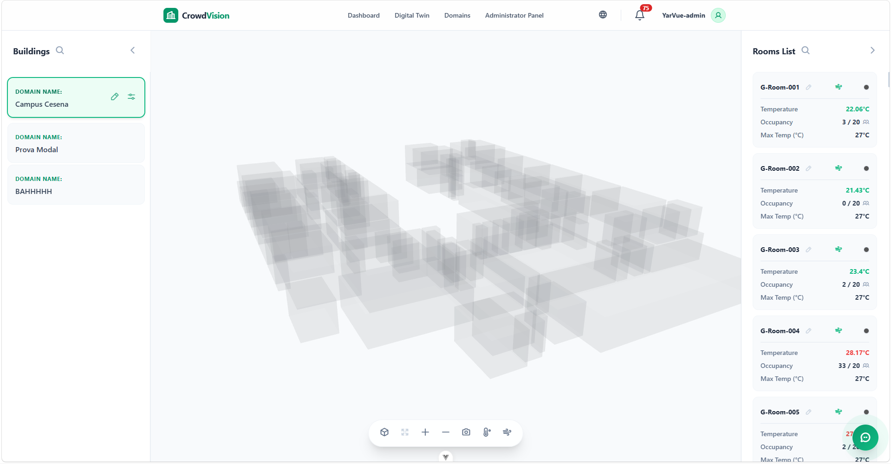
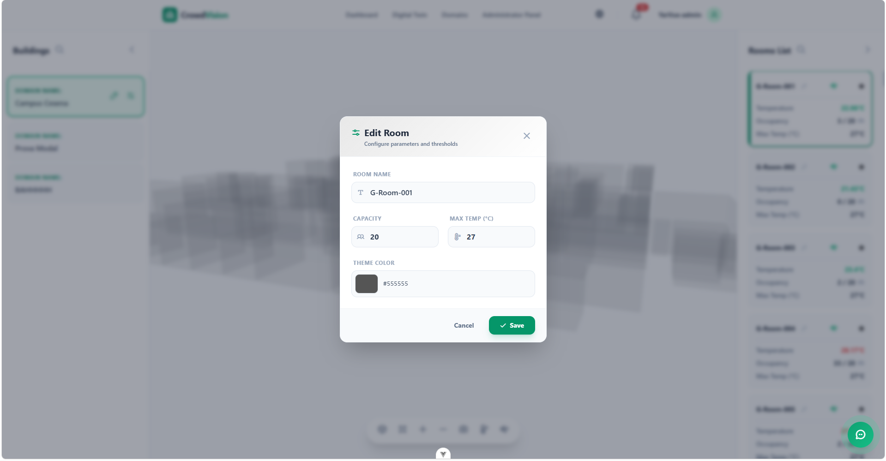

/
User Guide
On this page
The Digital Twin
The Digital Twin view is an interactive 3D model of your buildings. You can fly around the model, inspect rooms, watch live occupancy and temperature, and — with the right permissions — edit the spatial configuration.

Figure 1 — The digital twin renders every room of the selected building in 3D.
Moving around: the control panel
The control panel inside the viewer holds the navigation tools.
| Control | What it does |
|---|---|
| Reset View | Return the camera to its default position, centred on the building. |
| Zoom In / Out | Move the camera closer or further away. |
| Panorama Mode | Auto-rotate smoothly around the building for a hands-free 360° overview. |
| Focus on Room | Isolate the selected room and move the camera to inspect it. |
| Temperature Mode | Colour rooms by live temperature, from cool blues to warm reds. |

Figure 2 — The control panel: reset, zoom, panorama, focus, and temperature colouring.
Left menu: buildings and floors
- Select Building — choose which building to view (the list reflects your domains).
- Floor Selection — show a single level, or All Floors for the whole structure.
- Register Building — administrators open the Register Building modal to upload a building’s JSON layout and set its name, thresholds, and per-room capacity before saving. The system assigns a unique id automatically. See Upload a Digital Twin.
Right menu: rooms and details
- Search Room — find a room by name or id.
- Room List — a scrollable list of the rooms in view.
- Selection & Details — click a room (in the list or the 3D model) to highlight it and open its live readings.

Figure 3 — Selecting a room opens its details and live sensor readings.
Editing rooms
Administrators and staff can keep the twin in sync with the real space. Select a room and choose Edit Room to configure:
| Field | Meaning |
|---|---|
| Room Name | The display name (e.g. “Physics Lab”). |
| Room Identifier | The system id (read-only; set from the uploaded model). |
| Capacity | The maximum safe occupancy, which drives the occupancy statuses. |
| Max Temp (°C) | The room’s upper temperature threshold; exceeding it can trigger alerts. |
| Theme Color | The room’s default colour in standard 3D mode. |

Figure 4 — Edit Room configures a room’s name, capacity, temperature limit, and colour.
Editing building defaults
Authorized users can also edit a whole building via Edit Building:
- Building Name — update the display name.
- Global Max Temp (°C) — a default temperature limit for the building. A room without its own limit inherits this value.
Changes at the building level sync immediately across the 3D model and the dashboard analytics.
Editing the building’s shape
Beyond names, capacities, and colours, administrators and staff can reshape the building itself — move rooms, resize them, add or remove rooms, duplicate a layout, or merge two rooms into one — directly in the 3D view, or in a simpler 2D floor plan.
Entering Edit Mode
If you have an editing role in the building’s domain, an Edit Model button appears in the top-right of the viewer. Selecting it:
- Freezes the live temperature/air-quality colouring — rooms show a neutral colour while you edit, so live data doesn’t distract from geometry (an overlapping room tints red as a warning instead).
- Replaces the toolbar with editing controls.
- Disables Focus on Room for the duration of the session.
Nothing is sent to the server until you press Save — Cancel discards every change instantly.
Move and Resize
Select a room to reveal its move/resize handles.
| Tool | What it does |
|---|---|
| Move | Drag the room across its own floor. It snaps to a grid and to nearby rooms’ edges (a pink guide line shows the alignment) — hold Alt to move freely without snapping. |
| Resize | Drag a face of the room to grow or shrink it. |
| Inspector panel | Type exact X/Y/Z and Width/Height/Depth values instead of dragging. The Y (floor) field is a dropdown of the building’s existing floor levels, or “Custom” for a new one. |
Two rooms are allowed to overlap while editing — it’s a warning, never a block. Fix it before saving, or leave it and come back later.
The 2D floor plan
For laying out a whole floor quickly, switch the toolbar’s view toggle from 3D to Plan. The floor plan shows the current floor from directly above: drag a room to move it, drag its corner or edge handles to resize it, or drag on empty space to draw a brand-new room. This is the exact same draft as the 3D view — switch back any time to see your changes in 3D.
Add, Delete, Duplicate, Merge
| Action | What it does |
|---|---|
| Add Room | Drops a default-sized room in the nearest free spot on the current floor. |
| Delete | Removes the selected room. You’ll be asked to confirm if the room has live sensor readings, and a building’s very last room can’t be deleted. |
| Duplicate | Clones the selected room, offset slightly — a fast way to build out a repetitive layout. |
| Merge | Arms merge mode on the selected room — click a second room to combine them into one (the first room’s name and colour are kept; capacities are summed). You’ll be warned if the two rooms don’t actually share a wall. |
Undo, Redo, and keyboard shortcuts
Every move, resize, add, delete, duplicate, and merge is a single undo step.
| Shortcut | Action |
|---|---|
M | Switch to the Move tool |
S | Switch to the Resize tool |
Ctrl + Z | Undo |
Ctrl + Shift + Z | Redo |
| Arrow keys | Nudge the selected room (hold Shift for a bigger step) |
Ctrl + D | Duplicate the selected room |
Delete / Backspace | Delete the selected room |
Alt (held) | Move freely, ignoring snapping |
Esc | Cancel a pending merge |
Saving
Save writes every change from the session in one request. If it fails — for example, a lost connection — your edits are kept locally so you can simply try again; nothing is lost. Trying to leave the page (or closing the tab) with unsaved changes asks you to confirm first.